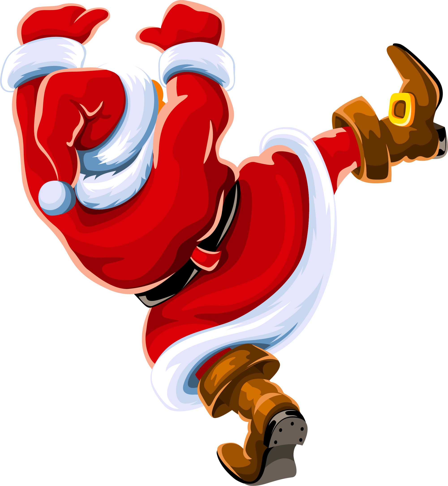
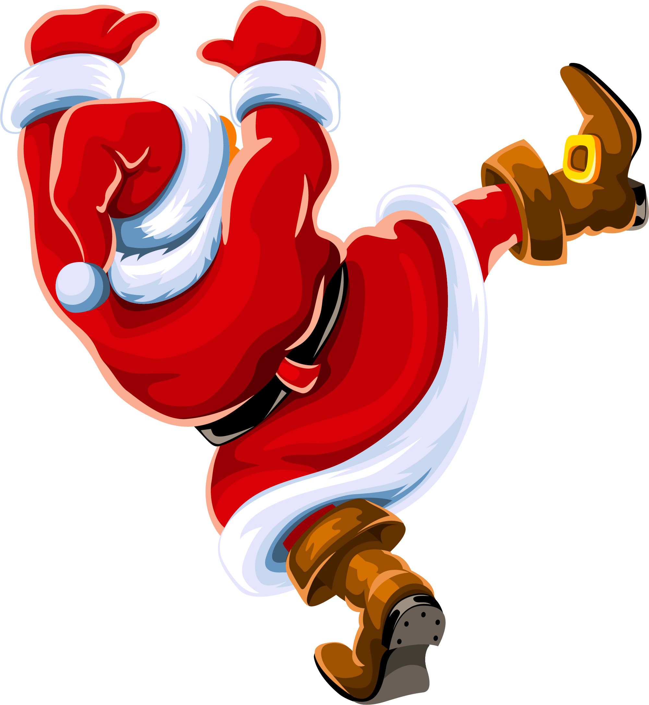

O nama
Santa Gifting je dobrotvorna, nevladina, neprofitna organizacija koja ima svrhu
da usreći naše najmlađe. Osnovana je krajem novembra 2020. godine od strane organizacije Budi Human kao
humanitarna akcija koja ce vašim najmlađima i najvoljenijima ulepšati ovogodišnje bozicne i novogodišnje
praznike.
Naša organizacija ce se potruditi da svakom mališanu odgovori na pismo koje je poslao
Deda Mrazu i da mu
Deda Mraz licno dostavi njegov novogodišnji paketic na kućnu adresu.
Ova akcija ne bi bila moguća bez nasih vernih
sponzora koji su ove godine odlučili da učine nešto drugacije i ulepšaju ovu 2020 godinu. Zahvaljujemo se svima
koji učestvuju u ovom projektu i nadamo se da ćemo ovakvu akciju ponoviti i sledeće godine.
Našu dobrotvornu akciju mozete pronaći i podržati na Instagramu, Youtube-u i Facebook-u.